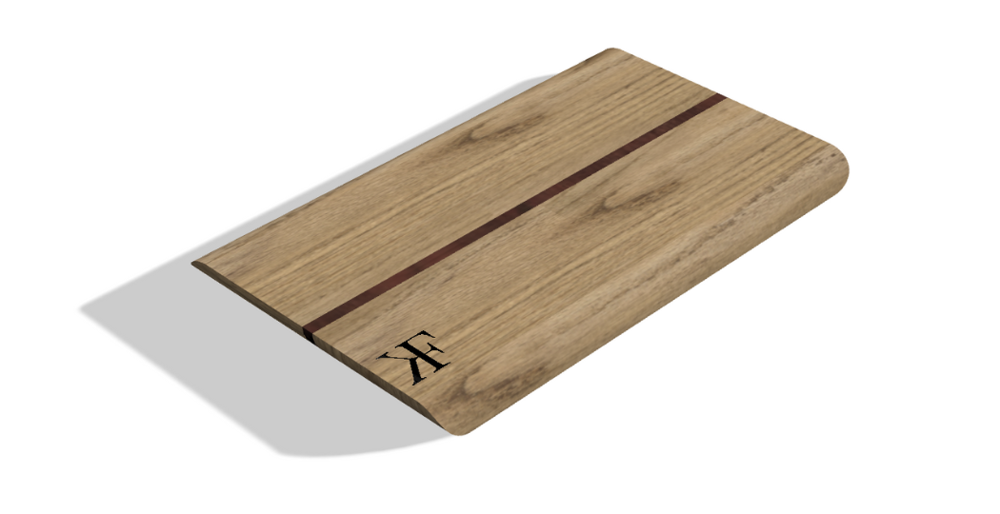

About Me
 Hi! I'm Kristen Farah, currently in my third year at
Australian Catholic University (ACU)
studying a Bachelor of Education (Secondary) / Bachelor of Arts (Design Innovation and Technologies).
I major in Food Technology and Design and Technology, with minors in Industrial Technology (Timber and Metal work) and Computing.
I’m passionate about practical learning that helps students build real-world skills in the kitchen, the workshop, and beyond.
Hi! I'm Kristen Farah, currently in my third year at
Australian Catholic University (ACU)
studying a Bachelor of Education (Secondary) / Bachelor of Arts (Design Innovation and Technologies).
I major in Food Technology and Design and Technology, with minors in Industrial Technology (Timber and Metal work) and Computing.
I’m passionate about practical learning that helps students build real-world skills in the kitchen, the workshop, and beyond.
My Teaching and Practical Experience
I have completed three practicums in local schools around me, teaching:
- Stage 4 Technology Mandatory – (engineering, food technology, textiles)
- Stage 5 Food Technology
- Stage 6 Food Technology
Through these practicums, I’ve developed skills across Food Technology, Industrial Technology, Textiles Technology, and Digital Design (CAD in Fusion 360, laser cutting, 3D printing).
Practicum Summary
| School | Year | Stage | Focus |
|---|---|---|---|
| All Saints Catholic College, Liverpool (K-12) | 2024 | 4 and 5 |
|
| Patrician Brothers, Fairfield (7-12) | 2024 | Stage 4 and 5 |
|
| Clancy Catholic College, West Hoxton (7-12) | 2025 | Stage 4, 5 and 6 |
|

TECH211
Food Mould Task

TECH306
Decomposition and Redesign Task

TECH205
Veneer Serving Tray

TECH205
Timber Stool
TECH205
Timber Stool

TECH205
Timber Chopping Board CAD

TECH108
Embroidery

TECH211
CAD Fan

TECH104
Dog lamp